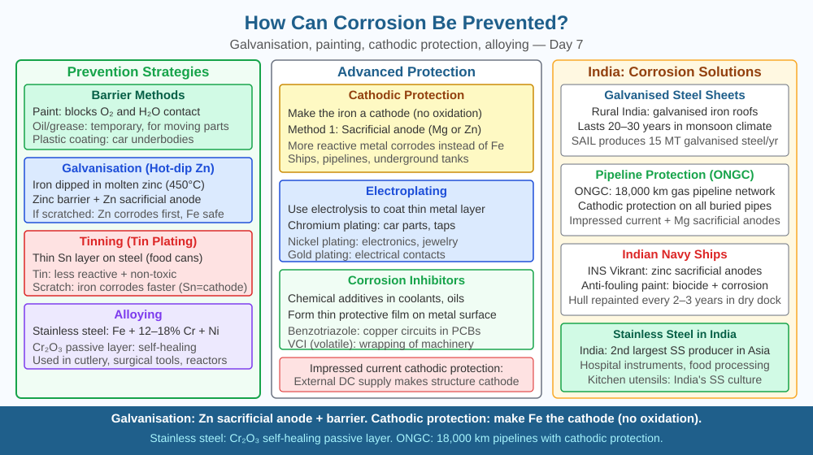

By the end of this lesson, you should be able to explain how galvanisation protects iron using sacrificial protection, describe why zinc continues to protect iron even after the coating is scratched, and distinguish between barrier methods (paint, oil) and electrochemical methods (galvanisation, cathodic protection).
Railway tracks in India are made of steel — an iron alloy. They sit outdoors, exposed to monsoon rains, humidity, and oxygen for decades. Yet they do not crumble to rust while bridges and highway barriers do require repainting every few years. The difference comes down to how the steel is protected. Some protection methods merely cover the iron surface. Others do something far more clever: they turn the chemistry of corrosion against itself, making a different metal corrode instead of the iron. How does that work?
Corrosion prevention strategies fall into two categories: barrier methods (physically blocking oxygen and water from reaching the iron surface) and electrochemical methods (manipulating the anodic and cathodic reactions so that iron is never the metal being oxidised).
Barrier methods.
Painting and oiling. A coat of paint, lacquer, or oil on iron blocks the electrolyte film that the corrosion cell requires. The electrochemical cell cannot operate without its electrolyte. This is why oiling iron tools before storage prevents rust. The limitation: once the barrier is scratched or chipped, bare iron is exposed and corrosion begins immediately at that spot.
Electroplating. Iron can be coated with chromium (decorative taps, car trims) or tin (tin cans for food packaging). Chromium forms a Cr₂O₃ passivation layer that self-repairs; tin simply acts as a barrier. However, tin is below iron in the reactivity series. If the tin coating on a food can is scratched and both tin and iron are exposed to the electrolyte inside, the iron becomes the anode — it corrodes faster than uncoated iron would. This is why damaged tin cans corrode quickly from the inside.
Electrochemical method 1 — Galvanisation (sacrificial protection).
Galvanisation is the process of coating iron or steel with a thin layer of zinc, typically by dipping the iron into molten zinc (hot-dip galvanisation) or by electrodeposition. Corrugated iron sheets on Indian rooftops and chain-link fencing are almost always galvanised.
Zinc is higher in the reactivity series than iron. When both zinc and iron are in contact in the presence of an electrolyte, zinc has a greater tendency to lose electrons. Zinc therefore acts as the anode and iron acts as the cathode in any corrosion cell that forms. Iron receives electrons rather than losing them — it cannot be oxidised and cannot rust.
The equation at the zinc anode: Zn → Zn²⁺ + 2e⁻
The electrons flow to the iron, which remains protected as the cathode.
The critical property: the scratch test. Suppose you scratch a galvanised sheet deeply, exposing the bare iron. With a tin coating, exposed iron would become the anode and rust quickly. With a zinc coating, the surrounding zinc still preferentially oxidises. Even though the iron surface is physically exposed, zinc continues to corrode in place of iron until all the zinc in the vicinity is consumed. This is electrochemical protection, not merely physical covering.
Electrochemical method 2 — Cathodic protection.
Large iron structures that cannot easily be coated — underground oil pipelines, ship hulls, the iron framework of concrete bridge pillars — are protected by connecting them electrically to a block of a more reactive metal such as magnesium or zinc. The reactive metal (called a sacrificial anode) corrodes; the iron structure is forced to act as a cathode and cannot corrode. The sacrificial anode is replaced periodically when it is consumed.
Indian Oil Corporation uses magnesium sacrificial anodes on buried petroleum pipelines across the country. Ships in Mumbai Harbour use zinc sacrificial anodes bolted to their hulls below the waterline.
Passivation — aluminium's self-protection.
Aluminium immediately forms Al₂O₃ when exposed to air. This thin oxide layer is dense, adherent, and impermeable — it does not flake off the way rust does. The same principle is used deliberately in anodisation: an aluminium object is made the anode in an electrolytic cell, thickening its oxide layer intentionally. Anodised aluminium is used in window frames and cookware across India because it resists corrosion without any additional coating.
Three categories of protection and their logic:
| Method | How it works | Weakness |
|---|---|---|
| Paint / oil | Blocks electrolyte (barrier) | Fails when scratched |
| Tin plating | Barrier only; tin below iron in reactivity | Scratch exposes iron as anode — corrodes fast |
| Galvanisation (zinc) | Zinc above iron; corrodes sacrificially; protects even when scratched | Zinc eventually consumed |
| Cathodic protection | Sacrificial anode (Mg/Zn) forces iron to be cathode | Anode must be replaced |
| Passivation (Al, Cr) | Impermeable oxide layer self-seals surface | Only works for certain metals |
Key principle: the more reactive metal always corrodes preferentially. Knowing where each metal sits in the reactivity series tells you immediately which metal will be the anode (corrod) and which will be the cathode (protected).
The included SVG shows two side-by-side panels:

A rooftop steel water tank is painted outside but not inside, where water contacts iron continuously. An engineer proposes: (A) epoxy coating on the interior, or (B) a magnesium block attached to the inside wall.
Explain which solution keeps protecting iron when a small crack exposes bare metal. Use the electrochemical mechanism — what is the anode in each case, and what happens to the iron surface? Then predict: if magnesium is used, what happens to the block over five years and what periodic maintenance is required?
Which method prevents corrosion by coating iron with a sacrificial metal?
Correct answer: c
Why is understanding the protective mechanism more important than just listing prevention methods?
Correct answer: a
What would happen if a zinc coating on galvanised steel got scratched deeply?
Correct answer: c
Explain today's concept to a younger student in 60 seconds without technical jargon. Then explain it again using the correct scientific vocabulary.
If both explanations describe the same mechanism, you have understood the concept rather than memorised it.
The Statue of Liberty in New York is copper — and it turned green not because of rust but because of patination: copper reacts with oxygen, water, and carbon dioxide to form a green-blue layer of copper carbonate (Cu₂(CO₃)(OH)₂). Unlike iron rust, this patina is dense, adherent, and actually protective — it prevents further corrosion of the copper beneath. The same chemistry happens to the copper roofing on old Indian temples; the green layer is not decay but armour. This is exactly what passivation is: the metal's first corrosion product sealing itself from further attack.
Galvanisation protects iron by coating it with zinc, which is higher in the reactivity series and therefore corrodes preferentially as the anode — and crucially, zinc continues this sacrificial protection even after the coating is scratched, because electrochemical protection does not require a continuous physical barrier.